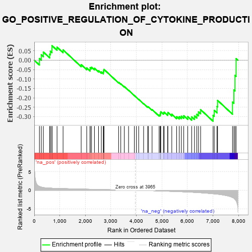
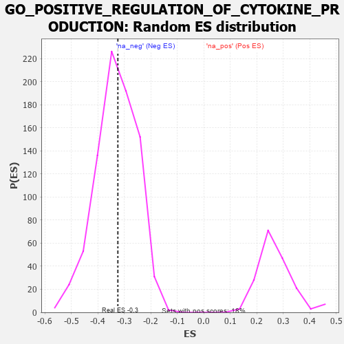

| | | Dataset | 7d |
| Phenotype | NoPhenotypeAvailable |
| Upregulated in class | na_neg |
| GeneSet | GO_POSITIVE_REGULATION_OF_CYTOKINE_PRODUCTION |
| Enrichment Score (ES) | -0.32437316 |
| Normalized Enrichment Score (NES) | -0.9823742 |
| Nominal p-value | 0.5195122 |
| FDR q-value | 0.8922557 |
| FWER p-Value | 1.0 |
Table: GSEA Results Summary

Fig 1: Enrichment plot: GO_POSITIVE_REGULATION_OF_CYTOKINE_PRODUCTION
Profile of the Running ES Score & Positions of GeneSet Members on the Rank Ordered List
| PROBE | GENE SYMBOL | GENE_TITLE | RANK IN GENE LIST | RANK METRIC SCORE | RUNNING ES | CORE ENRICHMENT | | 1 | BCL3 | | | 202 | 1.047 | 0.0092 | No |
| 2 | HGF | | | 276 | 0.870 | 0.0289 | No |
| 3 | ARNT | | | 357 | 0.741 | 0.0434 | No |
| 4 | DHX33 | | | 605 | 0.593 | 0.0319 | No |
| 5 | GLMN | | | 632 | 0.583 | 0.0480 | No |
| 6 | MRE11 | | | 693 | 0.560 | 0.0590 | No |
| 7 | XRCC6 | | | 694 | 0.560 | 0.0777 | No |
| 8 | HMGB2 | | | 892 | 0.507 | 0.0696 | No |
| 9 | SRC | | | 1128 | 0.459 | 0.0551 | No |
| 10 | GATA4 | | | 1837 | 0.330 | -0.0234 | No |
| 11 | IRF4 | | | 2054 | 0.298 | -0.0408 | No |
| 12 | SYK | | | 2186 | 0.278 | -0.0481 | No |
| 13 | C1QBP | | | 2189 | 0.278 | -0.0391 | No |
| 14 | CREB1 | | | 2243 | 0.269 | -0.0369 | No |
| 15 | MIF | | | 2357 | 0.252 | -0.0428 | No |
| 16 | TLR1 | | | 2517 | 0.224 | -0.0554 | No |
| 17 | PUM2 | | | 2627 | 0.209 | -0.0623 | No |
| 18 | CLPB | | | 2706 | 0.198 | -0.0656 | No |
| 19 | PHB2 | | | 2712 | 0.197 | -0.0596 | No |
| 20 | DDX1 | | | 2718 | 0.196 | -0.0538 | No |
| 21 | RORA | | | 2730 | 0.193 | -0.0487 | No |
| 22 | SMAD3 | | | 3303 | 0.105 | -0.1175 | No |
| 23 | DDX3X | | | 3388 | 0.091 | -0.1251 | No |
| 24 | PQBP1 | | | 3526 | 0.072 | -0.1401 | No |
| 25 | DHX9 | | | 3693 | 0.044 | -0.1596 | No |
| 26 | IFIH1 | | | 3919 | 0.006 | -0.1878 | No |
| 27 | DDX58 | | | 3998 | -0.007 | -0.1974 | No |
| 28 | PDE4B | | | 4089 | -0.022 | -0.2081 | No |
| 29 | WNT11 | | | 4282 | -0.056 | -0.2305 | No |
| 30 | SETD2 | | | 4443 | -0.084 | -0.2479 | No |
| 31 | LRRK2 | | | 4467 | -0.087 | -0.2479 | No |
| 32 | GATA3 | | | 4614 | -0.120 | -0.2624 | No |
| 33 | CLU | | | 4889 | -0.174 | -0.2912 | No |
| 34 | CASP1 | | | 4932 | -0.185 | -0.2904 | No |
| 35 | EP300 | | | 4941 | -0.186 | -0.2852 | No |
| 36 | XRCC5 | | | 4946 | -0.187 | -0.2795 | No |
| 37 | PRKDC | | | 4955 | -0.189 | -0.2742 | No |
| 38 | DDX41 | | | 5058 | -0.211 | -0.2801 | No |
| 39 | DRD2 | | | 5088 | -0.221 | -0.2764 | No |
| 40 | TMF1 | | | 5225 | -0.251 | -0.2852 | No |
| 41 | DDX21 | | | 5231 | -0.252 | -0.2775 | No |
| 42 | FZD5 | | | 5386 | -0.292 | -0.2872 | No |
| 43 | SPHK1 | | | 5576 | -0.339 | -0.2999 | No |
| 44 | CASP8 | | | 5678 | -0.369 | -0.3004 | No |
| 45 | TLR2 | | | 5761 | -0.395 | -0.2976 | No |
| 46 | TKFC | | | 5854 | -0.419 | -0.2953 | No |
| 47 | XBP1 | | | 6011 | -0.475 | -0.2992 | No |
| 48 | EGR1 | | | 6165 | -0.527 | -0.3011 | Yes |
| 49 | FLOT1 | | | 6276 | -0.564 | -0.2963 | Yes |
| 50 | BIRC3 | | | 6366 | -0.603 | -0.2875 | Yes |
| 51 | MALT1 | | | 6432 | -0.634 | -0.2747 | Yes |
| 52 | TRPV4 | | | 6515 | -0.668 | -0.2628 | Yes |
| 53 | CCR2 | | | 7003 | -0.939 | -0.2932 | Yes |
| 54 | PIBF1 | | | 7049 | -0.966 | -0.2668 | Yes |
| 55 | UFD1 | | | 7157 | -1.040 | -0.2458 | Yes |
| 56 | PTPRJ | | | 7180 | -1.054 | -0.2135 | Yes |
| 57 | PDE4D | | | 7764 | -1.944 | -0.2226 | Yes |
| 58 | TRAF6 | | | 7818 | -2.157 | -0.1577 | Yes |
| 59 | TRAF2 | | | 7861 | -2.481 | -0.0806 | Yes |
| 60 | PLCB1 | | | 7904 | -2.841 | 0.0085 | Yes |
Table: GSEA details [plain text format]

Fig 2: GO_POSITIVE_REGULATION_OF_CYTOKINE_PRODUCTION: Random ES distribution
Gene set null distribution of ES for GO_POSITIVE_REGULATION_OF_CYTOKINE_PRODUCTION